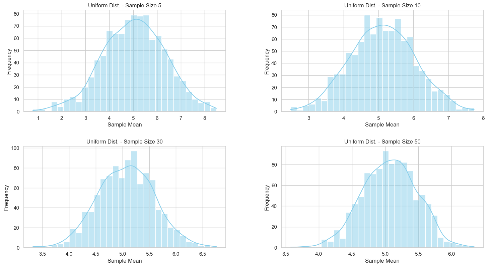
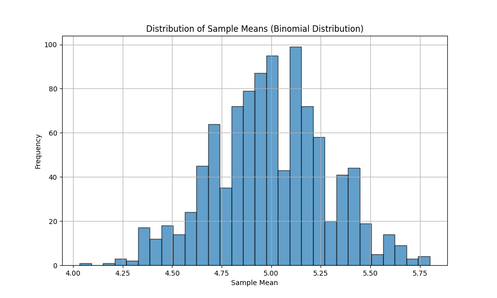

Exploring the Central Limit Theorem (CLT) Through Simulations
Motivation
The Central Limit Theorem (CLT) is a key concept in statistics:
Regardless of the population's distribution, the distribution of the sample mean becomes approximately normal as the sample size increases.
Why is this important? - It justifies using the normal distribution in many real-world situations. - Helps estimate population parameters. - Essential in quality control, finance, and data analysis.
Task 1 : Simulating Sampling Distributions
Population Distributions:
We will use three types of populations: - Uniform: Equal chance across a range. - Exponential: Time between random events. - Binomial: Count of successes over trials.
Python code
---
import numpy as np
def generate_population(dist, size=100000):
if dist == "uniform":
return np.random.uniform(0, 1, size)
elif dist == "exponential":
return np.random.exponential(scale=1.0, size=size)
elif dist == "binomial":
return np.random.binomial(n=10, p=0.5, size=size)
Task 2 : Sampling and Visualization
Sample and Calculate Sample Means:
Python code
import numpy as np
import matplotlib.pyplot as plt
# Define the simulation function
def simulate_sampling(population, sample_size=30, n_samples=1000):
return [
np.mean(np.random.choice(population, size=sample_size, replace=False))
for _ in range(n_samples)
]
# Create a population (e.g., a normal distribution)
population = np.random.normal(loc=50, scale=10, size=10000)
# Simulate the sampling process
sample_means = simulate_sampling(population, sample_size=30, n_samples=1000)
# Plot the distribution of sample means
plt.figure(figsize=(10, 6))
plt.hist(sample_means, bins=30, edgecolor='black', alpha=0.7)
plt.title('Distribution of Sample Means')
plt.xlabel('Sample Mean')
plt.ylabel('Frequency')
plt.grid(True)
plt.show()
Visualize the Sampling Distributions:
Python code
import matplotlib.pyplot as plt
import seaborn as sns
import numpy as np
sns.set(style="whitegrid")
# Simulate sampling
def simulate_sampling(population, sample_size=30, n_samples=1000):
return [
np.mean(np.random.choice(population, size=sample_size, replace=False))
for _ in range(n_samples)
]
# Generate different types of populations
def generate_population(distribution_type, size=10000):
if distribution_type == "uniform":
return np.random.uniform(low=0, high=10, size=size) # Uniform distribution
elif distribution_type == "exponential":
return np.random.exponential(scale=1, size=size) # Exponential distribution
elif distribution_type == "binomial":
return np.random.binomial(n=10, p=0.5, size=size) # Binomial distribution
else:
raise ValueError("Unknown distribution type")
# Plot the sampling distribution
def plot_sampling_distribution(dist_name, population):
sample_sizes = [5, 10, 30, 50]
plt.figure(figsize=(16, 10))
for i, size in enumerate(sample_sizes):
sample_means = simulate_sampling(population, sample_size=size)
plt.subplot(2, 2, i+1)
sns.histplot(sample_means, bins=30, kde=True, color="skyblue")
plt.title(f"{dist_name.capitalize()} Dist. - Sample Size {size}")
plt.xlabel("Sample Mean")
plt.ylabel("Frequency")
plt.tight_layout()
plt.suptitle(f"CLT Simulation for {dist_name.capitalize()} Population", fontsize=18, y=1.03)
plt.show()
# Example usage
uniform_pop = generate_population("uniform")
plot_sampling_distribution("uniform", uniform_pop)

Task 3 : Parameter Exploration
Run Simulations:
Python code
# Uniform
uniform_pop = generate_population("uniform")
plot_sampling_distribution("uniform", uniform_pop)
# Exponential
exp_pop = generate_population("exponential")
plot_sampling_distribution("exponential", exp_pop)
# Binomial
binom_pop = generate_population("binomial")
plot_sampling_distribution("binomial", binom_pop)
Uniform Population Distribution
Exponential Population Distribution
 Biominal Population Distribution
Observations:
- Sample means tend toward normal shape.
- Variance of sample means decreases with sample size.
- Heavily skewed populations (e.g. exponential) require larger sample sizes.
Task 4 : Practical Applications of CLT
- Manufacturing: Mean weight/size/quality of products.
- Polling: Estimating average opinions.
- Finance: Average return on investments.
- Science: Mean experimental measurements.
Why It Works:
- Sample means are sums of random variables.
- Sums tend to normality via CLT.
Conclusion
- The CLT enables the use of normal-based statistical methods.
- Useful even when the population is not normally distributed.
- Larger sample sizes lead to more accurate approximations.
Key Takeaway: CLT bridges the gap between non-normal populations and the powerful tools of normal distribution analysis.